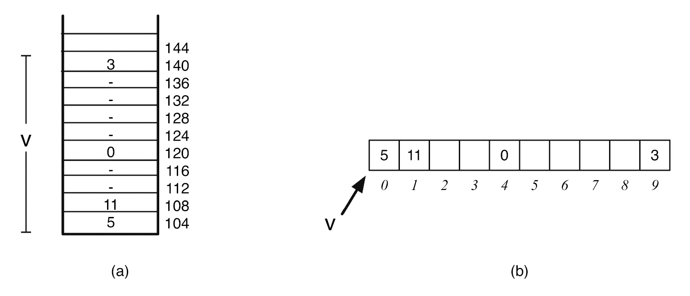
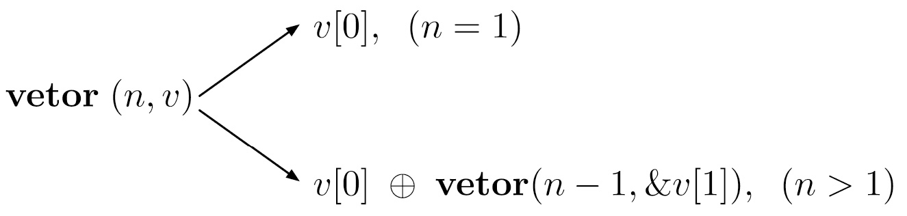
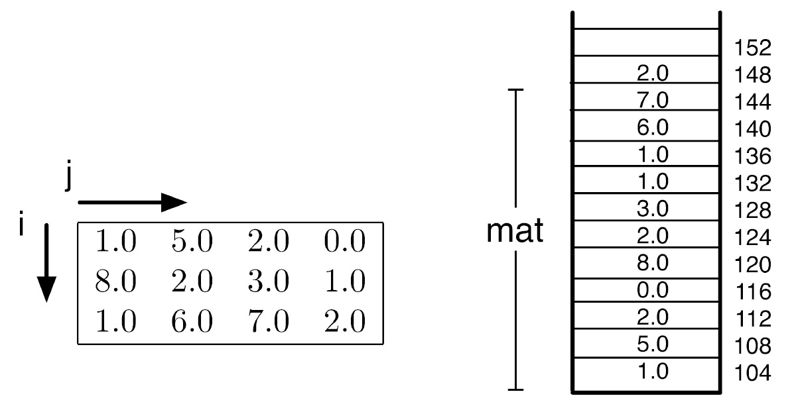

Como o C guarda várias posições sob um único nome — e por que, por baixo dos panos, tudo é sempre um bloco de memória contíguo.
int v[10]; reserva de uma vez 10 posições — v aponta sempre para a posição 0.

Escrever em v[30] com um vetor de 10 posições compila e roda — só que em memória que não é sua.
O nome do vetor já é um ponteiro constante para sua primeira posição.
int v[10]; int *u = v; — só v conhece o tamanho do bloco inteiro.
A equivalência entre índice e aritmética de ponteiro abre dois estilos de percurso.
ptr fica parado em numbers[0] do início ao fim — é o deslocamento + i que muda a cada volta.
Sem índice: *ptr lê o valor atual, depois ptr++ avança o próprio ponteiro.
float calculate_mean(float ptr[], int size) — dentro da função, ptr é só um ponteiro comum.
Caso base: um único elemento. Caso recursivo: o primeiro combinado com o resultado do resto.

1 (caso recursivo).">int mat[3][4]; guarda 12 inteiros contíguos, preenchidos linha por linha.

O laço externo só avança para a próxima linha depois que o interno termina todas as colunas.
mat[i][j]: 0,0 · 0,1 · 0,2 · 0,3 · 1,0 …A diagonal principal (i == j) precisa de um único laço, sem aninhamento.
i == j: 1 + 2 + 7 = 10int primary_diagonal_sum(int matrix[][4], int size) — só o número de colunas precisa ser fixo.
Código-fonte, explicação linha a linha e simulação da execução passo a passo — sem precisar compilar nada.
Depois, teste o que aprendeu no quiz — 10 questões sobre vetores, ponteiros e matrizes.